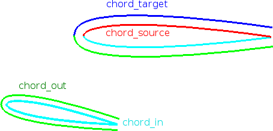
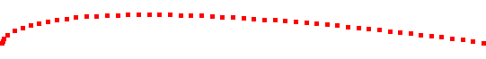
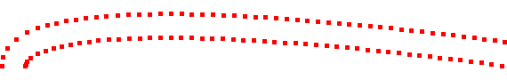
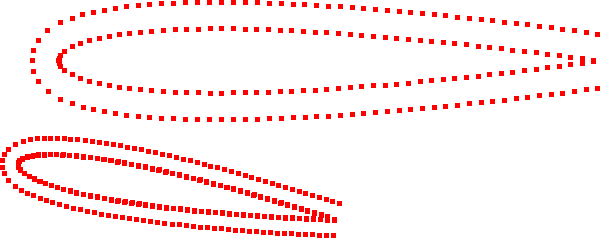
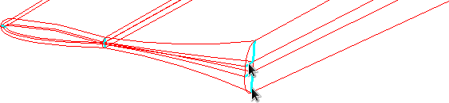
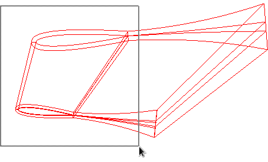
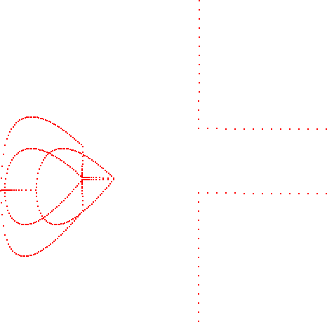
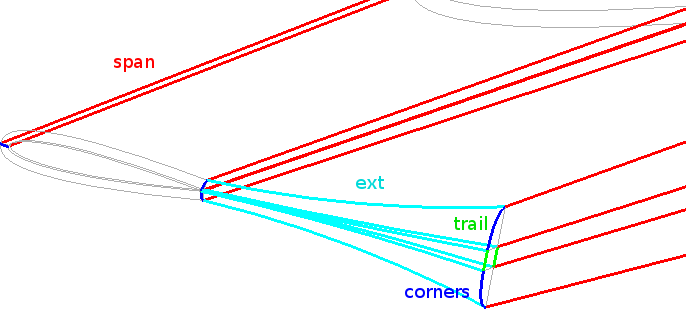
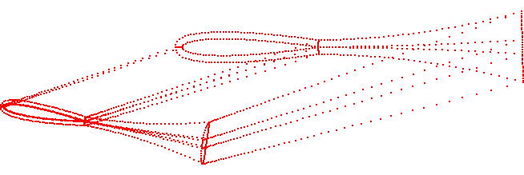

Content of this section:

 cfdmsh 4.0 documentation
cfdmsh 4.0 documentation cfdmsh 4.0 documentation


Content of this section:
Click on  in the toolbar
in the toolbar
Select "Glue_4" → Mesh > Create Mesh → Apply and Close
Click on  in the toolbar
in the toolbar
Select "Glue_4" → New Entity > Group > Create Group →
Select the  icon → Set the "Name" to "chord_source" →
icon → Set the "Name" to "chord_source" →
Select the edge called "chord_source" in the following picture → Click on "Add" →

Apply and Close
Select "Glue_4" → Right-click > Show Only Children
Select all "chord_*" groups → Type in the Python console:
SetRandomColors( )
or:
src( )
Select all "chord_*" groups → Right-click in the 3D window > Line Width > Edge Width →
Set "Line width" to 3 → Ok
Click on  in the toolbar
in the toolbar
Select "Mesh_1" → Mesh > Create Sub-mesh → Select "chord_source" →
Set "Algorithm" to "Wire Discretisation" →
Click on  beside "Hypothesis" > Nb. Segments →
beside "Hypothesis" > Nb. Segments →
Set "Number of Segments" to 50 →
Set "Type of distribution" to "Distribution with table density" →
Use the following density table →
| t | f(t) | |
|---|---|---|
| 1 | 0 | 5 |
| 2 | 0.02 | 1.3 |
| 3 | 0.2 | 1 |
| 4 | 1 | 1 |
OK → Apply and Close
Select "Mesh_1" → Mesh > Compute → Close
Select "Sub-mesh_1" → Right-click > Show Only
Select "Sub-mesh_1" → Right-click in the 3D window > Display Mode > Nodes
Click on  in the 3D window toolbar
in the 3D window toolbar
Click on  in the 3D window toolbar
in the 3D window toolbar

Select the "chord_target" group + "Sub-mesh_1" together → Type in the Python console:
ProjectEdgeSubmesh( )
or:
pes( )
Select "Mesh_1" → Mesh > Compute → Close
Select sub-mesh called "chord_target" → Right-click > Show
Select sub-mesh called "chord_target" → Right-click in the 3D window > Display Mode > Nodes

Select "Mesh_1" → Mesh > Create Sub-mesh → Select "chord_out" →
Set "Algorithm" to "Projection 1D" →
Click on  beside "Hypothesis" > Source Edge →
beside "Hypothesis" > Source Edge →
Set "Source Edge" to "chord_target" →
Set "Source Mesh" to "Mesh_1" →
OK → Apply and Close
Select "Mesh_1" → Mesh > Create Sub-mesh → Select "chord_in" →
Set "Algorithm" to "Projection 1D" →
Click on  beside "Hypothesis" > Source Edge →
beside "Hypothesis" > Source Edge →
Set "Source Edge" to "chord_source" →
Set "Source Mesh" to "Mesh_1" →
OK → Apply and Close
Select "Mesh_1" → Mesh > Compute → Close
Select "Mesh_1" → Right-click > Show Only
Select "Mesh_1" → Right-click in the 3D window > Display Mode > Nodes

Click on  in the toolbar
in the toolbar
Select "Glue_4" → Operations > Blocks > Propagate → Apply and Close
Select the edge groups visible in the following picture →

New Entity > Group > Union Groups → Set "Name" to "vl" → Apply and Close
Select "Glue_4" → New Entity > Group > Create Group →
Select the  icon → Set the "Name" to "vl_far" →
icon → Set the "Name" to "vl_far" →
Select the "vl" group → Click on "Add" →
Select the edges visible in the following picture → Click on "Remove" →

Apply and Close
Select the "vl" group → New Entity > Group > Edit Group →
Select the "vl_far" group → Click on "Remove" →
Apply and Close
Click on  in the toolbar
in the toolbar
ViscousLayerScaleFactor( 0.05, 1e-3, 1.2 )
or:
vlsf( 0.05, 1e-3, 1.2 )
Select "Mesh_1" → Mesh > Create Sub-mesh → Select "vl" →
Set "Algorithm" to "Wire Discretisation" →
Click on  beside "Hypothesis" > Nb. Segments →
beside "Hypothesis" > Nb. Segments →
Set "Number of Segments" to 14 →
Set "Type of distribution" to "Scale distribution" →
Set "Scale Factor" to 10 →
OK → Apply and Close
Select "Mesh_1" → Mesh > Create Sub-mesh → Select "vl_far" →
Set "Algorithm" to "Wire Discretisation" →
Click on  beside "Hypothesis" > Nb. Segments →
beside "Hypothesis" > Nb. Segments →
Set "Number of Segments" to 14 →
OK → Apply and Close
Select "Mesh_1" → Mesh > Compute → Close

Click on  in the toolbar
in the toolbar
Select "Glue_4" → Right-click > Show Only Children

Click on  in the toolbar
in the toolbar
| Edge Group | Number of Segments | Type of distribution | Scale |
|---|---|---|---|
| span | 50 | Scale distribution | 10 |
| ext | 40 | Scale distribution | 3 |
| corners | 10 | Equidistant distribution | |
| trail | 6 | Equidistant distribution |
Select "Mesh_1" → Mesh > Compute → Close

cfdmsh 4.0 documentation
tougeron-cfd.com © 2016